5.0 Objectives
After going through this lesson, you will be able to understand:
1. Various defects found in cast products.
Several types of defects may occur in castings, considerably reducing the total output of castings besides increasing the cost of their production. Defective castings offer an ever-present problem to the foundry industry. A defect may be the result of a single clearly defined cause or of a combination of factors. It is therefore essential to understand defects and the causes behind these defects so that they may be minimized or eliminated. The common types of defects found in castings, their causes and remedies are discussed below.
Blowholes
Blowholes generally appear as smooth walled, round voids or cavities opened to the casting surface. Blowholes are caused by the entrapped bubbles of gas with smooth walls. Blowholes may occur in clusters or there may be one large smooth depression. Blowholes are caused due to excessive moisture in the moulding sand, low permeability of sand, hard ramming of sand or gas producing ingredients in the mould.
 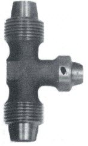
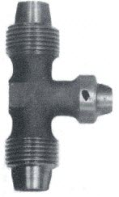

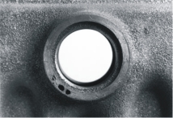 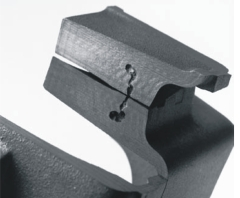 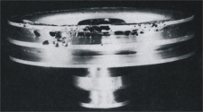
Splattering during pouring forming solid globules. Redesign of pouring procedure or gating system is needed.

 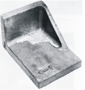
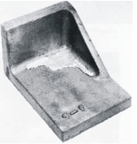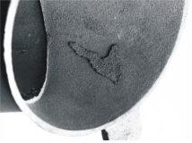 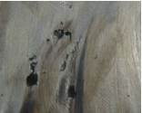
A misrun casting is one that remains incomplete due to the failure of metal to fill the entire mould cavity. This can happen when the section thickness of a casting is too thin or the metal temperature is too cold, so that the entire section is not filled during pouring before the metal solidifies. This defects is called a misrun.
 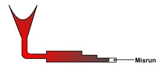
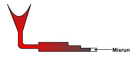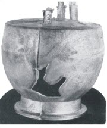

When two streams of metal, which is too cold, meet in side the mould cavity and do not fuse together, the defect is known as cold shut. In cold shut, a discontinuity is formed due to the imperfect fusion of two streams of metal in the mould cavity and the defect may appear like a crack or seam with smooth rounded edges.


When metals solidify, there is a volumetric shrinkage, and if adequate feeding does not compensate for the shrinkage, voids will occur inside the casting. It was discussed above and shown in Figure. This defect can be prevented by adequate feeding of molten metal and designing a gating system to enable directional solidification.

Network of small voids caused by localised solidification shrinkage. Caused by the freezing manner of the alloy.
 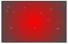
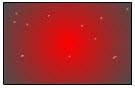 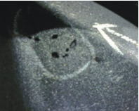
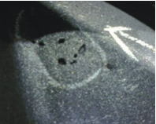Hot tears are internal or external cracks or discontinuities on the casting surface. Hot tearing occurs at location with high stress because the casting cannot shrink freely during cooling, owing to constraints in various portions of the moulds and cores. Resolve by mould collapsing or removing from the mould immediately after freezing. Hot tears can also be due to hard ramming, too much shrinkage of metal during solidification etc. Exothermic (heat producing) compounds may be used (exothermic padding) to control cooling at critical sections to avoid hot tearing.
Pin holes are small gas cavities.


Erosion of sand mould during pouring.

 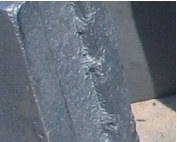
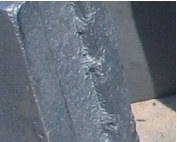Penetration of molten metal into the sand. Harder packing of sand is needed.
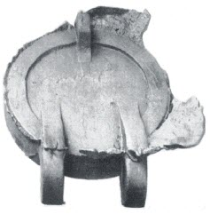

Shift of the cope relative to the drag.

Shift of the core, usually vertical.
 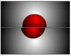 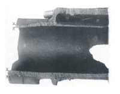
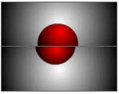 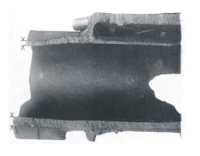Mould strength insufficient, liquid metal form a fin of the final casting.